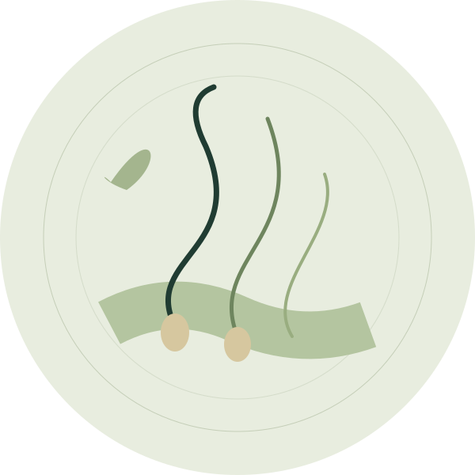

OUR CARE / HAIR & SCALP
Understand the cause.
Start with your scalp.
Hair shedding, thinning and scalp symptoms can have different causes. An assessment is the first step to understanding what is happening.
Discuss hair & scalp ↗
DOCTOR-LED CARE · DR. KEYUR CHOVATIYAYOUR CONSULTATION
What to expect.
- The doctor may ask when the changes began and examine your scalp and hair.
- Your health history, medicines and recent changes can help guide the assessment.
- Tests may be recommended when clinically needed. A treatment plan depends on the cause.
A LITTLE PREPARATION
Before you visit.
- Note when shedding or scalp symptoms started.
- Bring earlier reports or prescriptions, if available.
- Ask what monitoring your specific plan needs.
Read the first-visit guide ↗